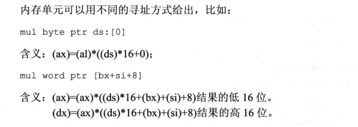
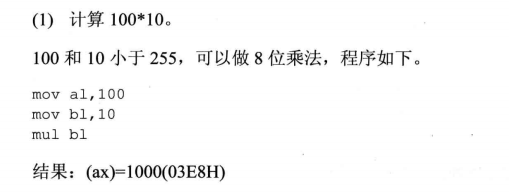
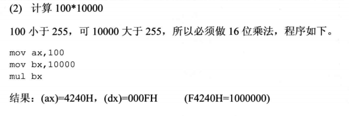
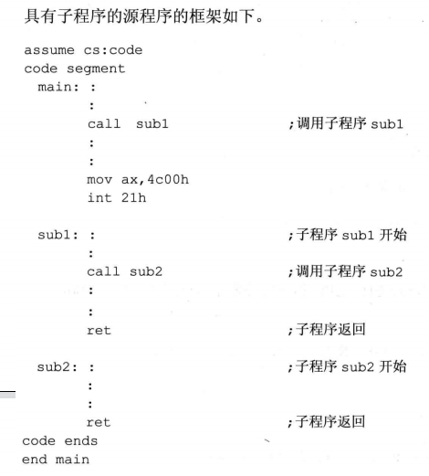

X86汇编系列到此应该结束🍻
指令简介
ret 和 retf 指令
- ret 指令使用栈中的数据修改 ip 的内容，从而实现近转移
- retf 指令使用栈中的数据修改 cs 和 ip 的内容，从而实现远转移。
CPU 执行 ret 指令时所进行的操作：
- (ip)=((ss)*16+(sp))
- (sp)=(sp)+2
CPU 执行 retf 指令所进行的操作：
- (ip)=((ss)*16+(sp))
- (sp)=(sp)+2
- (cs)=((ss)*16+(sp))
- (sp)=(sp)+2
以汇编语言去解释 ret 指令
pop ip
以汇编语言去解释 retf 指令
pop ip
pop cs
举个例子：
1 | assume cs:code |
执行完 ret 指令之后，(ip)=0，cs:ip 指向代码段第一条命令。
Call 指令
CPU 执行 call 指令时所执行的操作：
- 将当前的 ip 或 cs 和 ip 压入栈中
- 转移
call 指令不实现短转移，用汇编语言解释就是 jmp short 8位位移，因为短转移的转移位移是8位位移。
位移转移的 call 指令
格式： call 标号(将当前的 ip 压栈后，转移到标号处执行指令)
CPU 执行这种格式的 call 指令时的操作：
- (sp)=(sp)-2
- ((ss)*16+(sp))=(ip)
- (ip)=(ip)+16位位移
用汇编语言解释就是：
push ip
jmp near ptr 标号
目的地址转移的 call 指令
格式： call far ptr 标号(将当前的 cs 和 ip 压入栈后，转移到标号处执行操作)
CPU执行这种格式的 call 指令时的操作：
-
(sp)=(sp)-2
((ss)*16+(sp))=(cs)
-
(sp)=(sp)-2
((ss)*16+(sp))=(ip)
-
(cs)=标号所在的段地址
(ip)=标号中的偏移地址
用汇编语言解释就是：
push cs
push ip
jmp far ptr 标号
转移地址位于寄存器中的 call 指令
格式： call 16位寄存器(将ip 压入栈后，转移到 cs:16位寄存器处 执行)
CPU执行这种格式的 call 指令时的操作：
- (sp)=(sp)-2
- ((ss)*16+(sp))=(ip)
- (ip)=(16位寄存器)
用汇编语言解释就是：
push ip
jmp 16位reg
转移地址位于内存中的 call 指令
格式：
- call word ptr 内存单元地址
- call dword ptr 内存单元地址
和前面的都类似，word 涉及到的内存单元大小是1个字，只改变 ip 的值；dword 涉及到的内存单元大小是2个字，同时改变 cs 和 ip 的值。
用汇编语言解释“call word ptr 内存单元地址” 指令
push ip
jmp word ptr 内存单元地址
用汇编语言解释“call dword ptr 内存单元地址” 指令
push cs
push ip
jmp dword ptr 内存单元地址
mul 指令
乘法指令，要求如下：
- 两个相乘的数要么为8位，要么为16位。
- 8位：一个默认放在 al 中，另一个放在8位 reg 或内存字节单元中
- 16位：一个默认放在 ax 中，另一个放在16位 reg 或内存单元字节中
- 相乘后的结果
- 8位：结果默认放在 ax 中
- 16位：默认高位放在 dx 中，低位放在 ax 中
格式如下：
- mul reg
- mul 内存单元



call 和 ret 的配合使用

批量参数的传递
之前的参数我们都是使用寄存器来存放，当我们的参数变多，寄存器不够用时我们就需要将批量的数据存放在内存中，然后将内存空间的首地址放在寄存器中，然后再将数据传输给需要的子程序。对于有批量数据的返回结果我们也是使用相同的方法。
本文作者：GhDemi
本文链接： https://ghdemi.github.io/2022/06/09/Call%E5%92%8CRetf%E6%8C%87%E4%BB%A4/
文章默认使用 CC BY-NC-SA 4.0 协议进行许可，使用时请注意遵守协议。